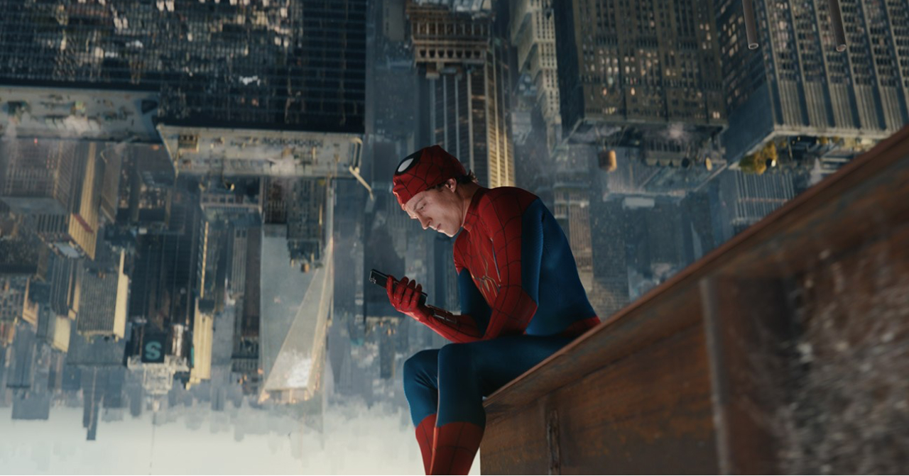
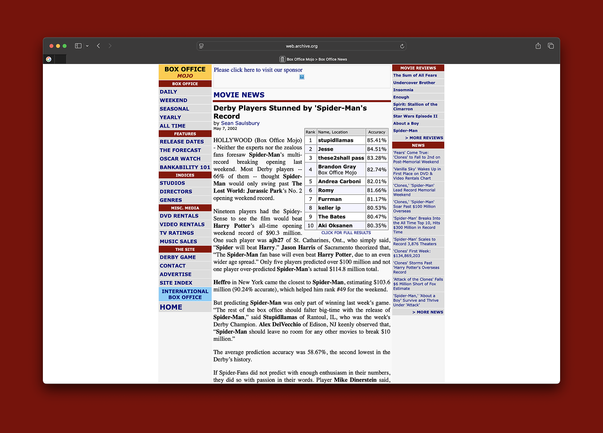
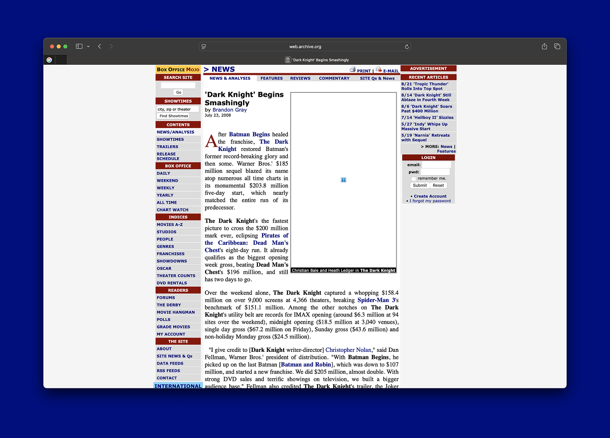
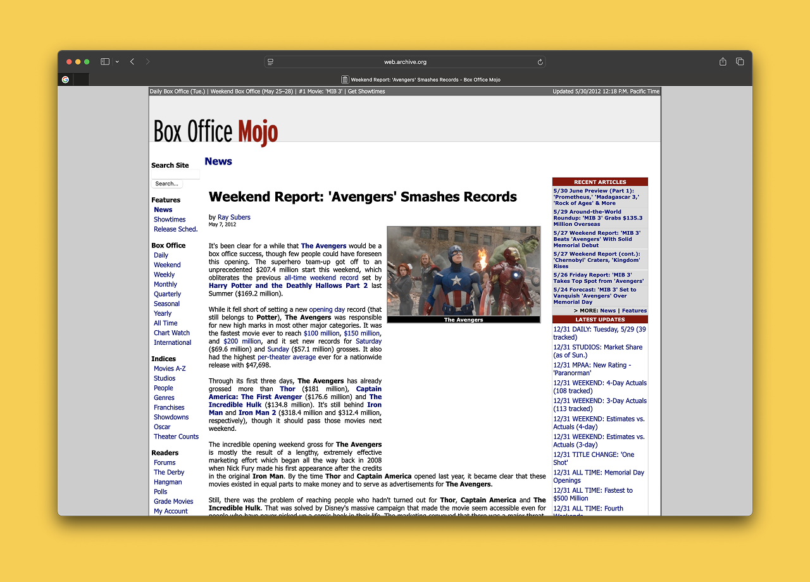
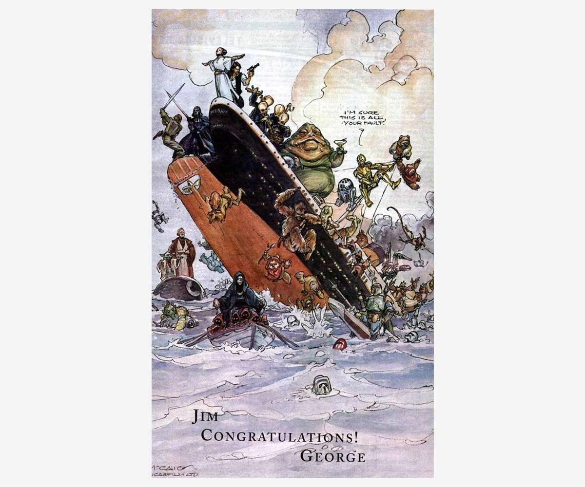

It is Tuesday, September 15th. Tonight, Spider-Man: Brand New Day will become the highest-grossing domestic earner of all time. As of this morning, it’s about $800,000 away from the record, roughly its projected daily gross.
This comes nearly two months after its release in late July, when it broke the all-time opening weekend record, grossing $360 million domestic in three days.
I went to see the movie with a friend on a Monday afternoon following its big weekend, and as we ascended those long narrow escalators at AMC Times Square, I shared the news with him. “You know this movie just opened bigger than any other movie in history?” He thought I was lying.
I had also told my partner on Sunday night, after weekend estimates reported Brand New Day was just millions shy of stealing the record from Avengers: Endgame, which opened in 2019 to $357 million. They didn’t believe me either.
When the first Spider-Man came out in May 2002, its record-breaking opening weekend also left me in disbelief. But it was a different kind of disbelief. With $114.8 million, it shattered the world’s perception of event movies. Fresh into the new millennium, it felt like it was showing us the future, and it felt like the movie to do it. This is how things were going to be, and it starts now. I learned about the numbers on the radio before school, the story delivered like breaking news, and it clouded my entire day. It was like my own personal 9/11, except instead of the world ending, it was beginning.
It was hard to believe because we had never seen anything like it. Brand New Day’s $360 million opening weekend was hard to believe because… how could a movie no one’s talking about pull off such a number? It felt more like an epilogue to No Way Home, its predecessor, rather than any kind of milestone. It’s jaw-dropping because of how uneventful it is. Rather than the story breaking over the news like a terrorist attack, you hear about the new record on X from Gitesh Pandya, or in Scott Mendelson’s newsletter, and you scroll on.

I wonder about the things that might cloud my grasp of the box office today. Is this about me living in New York City, removed from the rest of the country, where you’re deluded into thinking One Battle After Another might smash $100 million, throwing off my sense of what’s really happening in movie culture? Is it just about getting jaded the more I work in the actual industry? Or is it simply about me getting older? If I were 38 in 2002, would I have shrugged off that $114 million record?
No. If anything, I think it’s about the movies getting older. In 1998, as Titanic slowly crept up on Star Wars’ all-time record over the course of months, we all watched with anticipation and disbelief. We didn’t know such things happened. Star Wars was the highest-grossing movie of all time, and that was that. It felt like sacred history, but the movies were so young. There were so many records left to break. The movies are now a quarter century older. We know now that nothing is set in stone. We’re reminded almost every week, it seems. We’re reminded again today, as Spider-Man: Brand New Day passes the all-time record held by Star Wars: The Force Awakens.
Box office records are a relatively recent phenomenon, especially when it comes to opening weekends. Before Jaws, movies rolled out slowly—city by city over months, opening on a handful of screens and widening on word of mouth—and “opening weekend” as a tracked number barely existed. Jaws, in the summer of 1975, signaled to studios that a movie could be a national event, but it took time for that to become practice. Even The Empire Strikes Back, the sequel to Star Wars, played in limited release its first few weeks in 1980.
To put this in perspective, I compiled four charts that I’ve never seen before: the twenty biggest opening weekends in history as they stood at the end of 1989, 1999, 2009 and 2019. I don’t mean the biggest openings of each decade, but the record book itself, frozen at four moments in time. Read side by side, it’s clear how fast the ground moved. Click a chart below to expand it.
Top 20 Opening Weekends — As of End of 1989
| Rank | Film | Opening Weekend |
|---|---|---|
| 1 | Batman (1989) | $40.5M |
| 2 | Ghostbusters II (1989) | $29.5M |
| 3 | Indiana Jones and the Last Crusade (1989) | $29.4M |
| 4 | Back to the Future Part II (1989) | $27.8M |
| 5 | Beverly Hills Cop II (1987) | $26.4M |
| 6 | Indiana Jones and the Temple of Doom (1984) | $25.3M |
| 7 | Crocodile Dundee II (1988) | $24.5M |
| 8 | Return of the Jedi (1983) | $23.0M |
| 9 | Coming to America (1988) | $21.4M |
| 10 | Lethal Weapon 2 (1989) | $20.4M |
| 11 | Rambo: First Blood Part II (1985) | $20.2M |
| 12 | Rocky IV (1985) | $20.0M |
| 13 | Star Trek V: The Final Frontier (1989) | $17.4M |
| 14 | Star Trek IV: The Voyage Home (1986) | $16.9M |
| 15 | Rambo III (1988) | $16.8M |
| 16 | Star Trek III: The Search for Spock (1984) | $16.7M |
| 17 | Harlem Nights (1989) | $16.1M |
| 18 | Beverly Hills Cop (1984) | $15.2M |
| 19 | Star Trek II: The Wrath of Khan (1982) | $14.4M |
| 20 | Honey, I Shrunk the Kids (1989) | $14.3M |
Top 20 Opening Weekends — As of End of 1999
| Rank | Film | Opening Weekend |
|---|---|---|
| 1 | The Lost World: Jurassic Park (1997) | $72.1M |
| 2 | Star Wars: Episode I – The Phantom Menace (1999) | $64.8M1 |
| 3 | Toy Story 2 (1999) | $57.3M |
| 4 | Austin Powers: The Spy Who Shagged Me (1999) | $54.9M |
| 5 | Batman Forever (1995) | $52.8M |
| 6 | Men in Black (1997) | $51.1M |
| 7 | Independence Day (1996) | $50.2M2 |
| 8 | Jurassic Park (1993) | $47.0M |
| 9 | Batman Returns (1992) | $45.7M |
| 10 | Mission: Impossible (1996) | $45.4M |
| 11 | Godzilla (1998) | $44.1M |
| 12 | The Mummy (1999) | $43.4M |
| 13 | Batman & Robin (1997) | $42.9M |
| 14 | Big Daddy (1999) | $41.5M |
| 15 | Deep Impact (1998) | $41.2M |
| 16 | Twister (1996) | $41.1M |
| 17 | The Lion King (1994) | $40.9M3 |
| 18 | Batman (1989) | $40.5M |
| 19 | The Waterboy (1998) | $39.4M |
| 20 | Ace Ventura: When Nature Calls (1995) | $37.8M |
| 1 Massive $105.7M 5-day opening. 2 Massive $96.1M July 4th weekend. 3 First wide weekend. | ||
Top 20 Opening Weekends — As of End of 2009
| Rank | Film | Opening Weekend |
|---|---|---|
| 1 | The Dark Knight (2008) | $158.4M |
| 2 | Spider-Man 3 (2007) | $151.1M |
| 3 | The Twilight Saga: New Moon (2009) | $142.8M |
| 4 | Pirates of the Caribbean: Dead Man’s Chest (2006) | $135.6M |
| 5 | Shrek the Third (2007) | $121.6M |
| 6 | Spider-Man (2002) | $114.8M |
| 7 | Pirates of the Caribbean: At World’s End (2007) | $114.7M |
| 8 | Transformers: Revenge of the Fallen (2009) | $109.0M4 |
| 9 | Star Wars: Episode III – Revenge of the Sith (2005) | $108.4M |
| 10 | Shrek 2 (2004) | $108.0M |
| 11 | X-Men: The Last Stand (2006) | $102.8M |
| 12 | Harry Potter and the Goblet of Fire (2005) | $102.7M |
| 13 | Indiana Jones and the Kingdom of the Crystal Skull (2008) | $100.1M |
| 14 | Iron Man (2008) | $98.6M |
| 15 | Harry Potter and the Prisoner of Azkaban (2004) | $93.7M |
| 16 | The Matrix Reloaded (2003) | $91.8M |
| 17 | Harry Potter and the Sorcerer’s Stone (2001) | $90.3M |
| 18 | Harry Potter and the Chamber of Secrets (2002) | $88.4M |
| 19 | Spider-Man 2 (2004) | $88.2M |
| 20 | X2: X-Men United (2003) | $85.6M |
| 4 Five-day hit $200M, a first. | ||
Top 20 Opening Weekends — As of End of 2019
| Rank | Film | Opening Weekend |
|---|---|---|
| 1 | Avengers: Endgame (2019) | $357.1M |
| 2 | Avengers: Infinity War (2018) | $257.7M |
| 3 | Star Wars: The Force Awakens (2015) | $248.0M |
| 4 | Star Wars: The Last Jedi (2017) | $220.0M |
| 5 | Jurassic World (2015) | $208.8M |
| 6 | The Avengers (2012) | $207.4M |
| 7 | Black Panther (2018) | $202.0M |
| 8 | The Lion King (2019) | $191.8M |
| 9 | Avengers: Age of Ultron (2015) | $191.3M |
| 10 | Incredibles 2 (2018) | $182.7M |
| 11 | Captain America: Civil War (2016) | $179.1M |
| 12 | Star Wars: The Rise of Skywalker (2019) | $177.4M |
| 13 | Beauty and the Beast (2017) | $174.8M |
| 14 | Iron Man 3 (2013) | $174.1M |
| 15 | Harry Potter and the Deathly Hallows: Part 2 (2011) | $169.2M |
| 16 | Batman v Superman: Dawn of Justice (2016) | $166.0M |
| 17 | The Dark Knight Rises (2012) | $160.9M |
| 18 | The Dark Knight (2008) | $158.4M |
| 19 | The Hunger Games: Catching Fire (2013) | $158.1M |
| 20 | Rogue One: A Star Wars Story (2016) | $155.1M |
It’s interesting how late all of this begins. No film had ever opened above $30 million until Batman blew straight past it to $40.5 million in June of 1989—opening 37% ahead of the next-biggest debut in history, the first opening weekend that felt like a national event unto itself. Everything beneath it on the 1989 chart belongs to a smaller world, the same effect Spider-Man’s opening had in 2002.

And the ground kept rising under all of it. To make the all-time top twenty in 1989 you needed $14.3 million. In 2009 you needed $85.6 million. In 2019, you needed to open to at least $155 million to join the club. The floor climbed faster than the ceiling, more than tenfold in thirty years. Notably, almost none of this is inflation. Ticket prices barely more than doubled over those three decades while the record itself grew nearly ninefold. Batman’s $40.5 million, adjusted into 2009 dollars, comes out around $70 million—which wouldn’t make the 2009 list.
Each decade kind of erases the history made prior. Batman was the biggest opening the world had ever seen in 1989, but by 1999 it had slipped to eighteenth, and by 2009 it was gone. The Lost World’s $72.1 million, the biggest opening in history as of 1999, wouldn’t have made the top twenty a decade later. The Dark Knight ran the exact same arc a generation on—the all-time record in 2009, down to eighteenth by 2019, barely clinging to the list it once topped. The milestones age just as fast: the $100 million weekend that shocked the industry in 2002 was the cost of admission by 2009. $200 million was once unthinkable. There are now ten films that have crossed it, with two above $350 million.

Over time, the record started to fall more frequently but by less and less. The Lost World saw a relatively big leap with 37%, but then it went up 25% with the first Harry Potter, 27% with Spider-Man, then 18, then 11, then under 5. By the late 2000s it broke in three straight years—2006, 2007, 2008—each time by a nudge. What once felt like a generational rift became more of a seasonal formality. In 1989 Batman stood 37% clear of the field. By 1999 the gap between first and second had narrowed to 11%. By 2009 The Dark Knight beat Spider-Man 3 by 4.8%.
And then, in 2019, the pattern snapped. Before we get into that, here’s another view—each record breaker in sequence:
It’s worth noting Star Wars: Episode I – The Phantom Menace opened on a Wednesday in 1999, otherwise it likely would have obliterated The Lost World’s record and held onto it until 2002.
From 1989 to 2018, the record was breaking by an average of $15 million. The biggest leap was by $39 million (by The Force Awakens). But in 2019, Endgame broke Infinity War’s by $100 million. It took the standing record and stacked nearly a whole Spider-Man 2002 opening on top of it. The era Batman opened as an outlier, Endgame closed as one. Instead of suggesting a new frontier, the milestone felt like a conclusion.
Because Endgame was the culmination of everything the blockbuster had been building toward since Jaws. Forty-four years, one innovation at a time, all of it in service of the same goal: a bigger event. Jaws introduced the summer popcorn movie. Star Wars added the franchise. Batman added the comic-book property. Jurassic Park added the digital-age visual effects spectacle. Titanic added the cross-quadrant mega hit. Spider-Man introduced the 21st century hero. The Dark Knight added “prestige”. The Avengers established the cinematic universe.
Then the pandemic hit. It felt like Endgame had cashed in on all that history just in time, and we’d gone as high as we could go. Seven years passed without anyone touching that record—by far the longest gap between all-time opening records in the modern era.
This past July, Spider-Man: Brand New Day broke the record by a hair. No one expected it. No one was really watching.
Some of this is inflation. Tickets averaged $5.81 in 2002. They average $12.75 in 2026. Spider-Man 2002’s opening in today’s dollars would be roughly $220 million—bigger than most openings. But that doesn’t undercut the point. Adjust The Dark Knight’s record-breaking $158 million from 2008 into today’s ticket prices and you get about $249 million—still $110 million short of Brand New Day’s opening. Put the cultural footprint of the two movies side by side, and it doesn’t make sense.
The real change is somewhere else. In 2002, when Spider-Man opened, the culture had a shared surface. There were a handful of TV networks and major magazines. Everyone got their movie news from the same few sources. When something big happened at the box office, it was news the way an election was news. The record was a shared piece of information, and the film was a shared piece of culture.

Because there’s no shared broadcast anymore, it feels increasingly like there are no shared moments that last. Records used to be a proxy for cultural mass—how much of the country was looking at the same thing at the same time. Now they’re a proxy for market share inside a fandom, which can be enormous in dollars and tiny in footprint.
This is good for theaters and good for studios, at least if you’re Sony or Universal this year. The fandoms still show up in enormous numbers, even as each film’s cultural life shrinks. There’s no financial reason for any of it to change.

In 1998, when Titanic dethroned Star Wars as the highest grossing movie of all time, George Lucas took out a full-page ad in Variety addressed to James Cameron, depicting the Star Wars cast going down with the ship. It was illustrated by Iain McCaig, the Star Wars art director who was currently deep in pre-production on the first prequel—the same artist who’d go on to design Darth Maul. Spielberg had done the same for Lucas years before, with R2-D2 reeling in Jaws on a fishing line, and then again in 1997 when the Star Wars re-release passed E.T. We’ll likely see the tradition continue tomorrow with the inevitable X graphic, thrown together by a social media intern.
The business is fine, but the culture around it is not. The records will break, but nobody hears them fall.